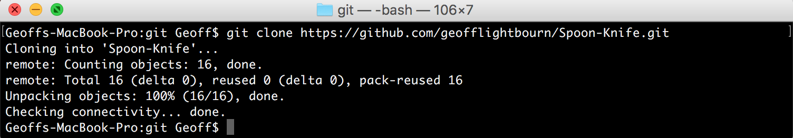

Forking a repository is a way to experiment and make changes to someone elses work without affecting the repository directly. Forking makes a copy of the repository for you to make changes locally. It can be used as a starting point for one of your own projects, or to fix bugs and errors.
If you want the owner to see your changes, you then submit a pull request which will allow them to add your changes to the project. Contributing to projects like this is the very soul of what open source truely is.
To keep it simple, we are going to use the practice repo github has kindly setup for us. It's called octocat/Spoon-Knife available here.
In the top right corner, click "Fork" and put it into your github account. It will redirect you to "youraccountname/Spoon-Knife" which is where we want to be. It's now your own personal copy to do with whatever you want.
Now we're going bring it down to our local directory. If you are still in the working directory form the previous lesson, you can type cd .. to go back out one step of your current directory. When we clone our fork, its going to create a folder with everything in it.
So lets go ahead and do that. In top bar of the forked repo under your account, copy the https url. Then do:
git clone paste in the url here
You should see:
And there you go, all the project files to start working with!
This step is optional, but very useful if you intend on working alongside the project owner. Syncing the fork we just got with the original Spoon-Knife repository allows us to stay up-to-date by pulling changes or "upstream" right to our forked local folder.
Go back to the original Spoon-Knife repository and copy the clone url at the top.
While we are still in our local fork folder go ahead and type:
git remote add upstream paste the orignal repo url here
Remeber git remote -v? You can use that to check your origin and upstream, so it should look like:
Now that we have forked a repo and its upstreamed, we have the ability to fetch and push. But whats the differance?
git fetch is used to retrieve new changes made by other people working on the repository. But It wont merge the changes into your own branches. Meaning that the work you have done will not be included.
git merge will combine the changes you have made, with the changes of others. You would use this if you wanted to merge changes with a remote branch (somone esles work) with your own local branch.
git pull is a combination between fetch and merge. It will fetch all the changes that others have made, and merge them with yours localy all in one go. You should always make sure your work is committed (the checkpoint to go back to) before you do this. When doing a pull, you may run into a conflict, but you are always able to do a git merge --abort if it can't be resolved.